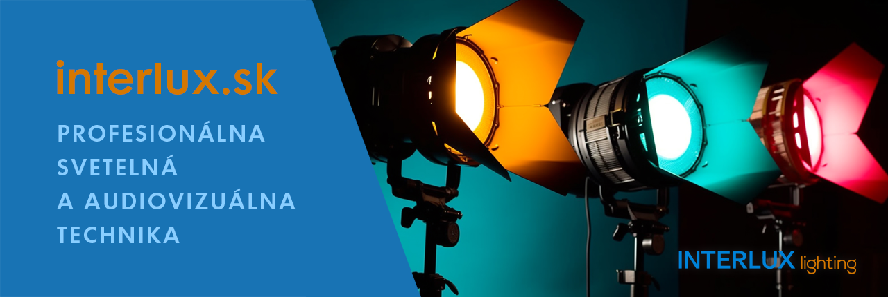
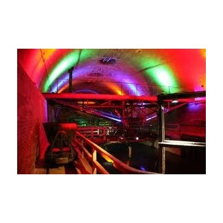
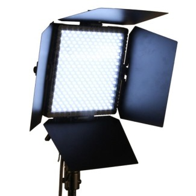
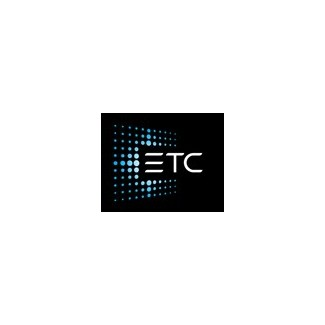
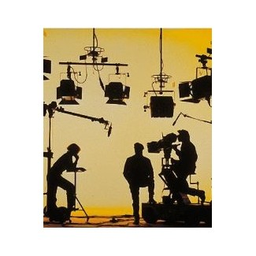
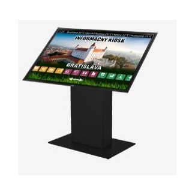
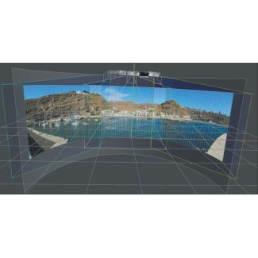

Dodávame svetelnú techniku, svetelné zdroje, audiovizuálnu techniku a divadelné technológie pre divadlá, múzeá, televízie, štadióny a kongresové sály.
Pozrieť katalógKontaktovať nás
Katalóg
Svetelná, štúdiová a projekčná technika, svetelné zdroje a riadiace systémy od popredných výrobcov.

Svietidlá, LED pásy a riadenie osvetlenia.

PAR, pohyblivé aj nepohyblivé, vhodné aj do exteriéru.

Reflektory, stmievače, svetelné pulty a distribúcia DMX.

Filtre, fólie, gobá a štúdiové reflektory.

Projektory a interaktívne panely.

Servery, prehrávače a softvér Pandoras Box.
Značky
Na Slovensku zastupujeme viacero prémiových výrobcov aj nízkonákladových značiek.
Služby
Sme systémový integrátor profesionálnych AV technológií pre multifunkčné sály, divadlá, TV štúdiá a kultúrne domy.
O nás
Za roky činnosti máme za sebou množstvo riešení, dodávok a realizácií pre divadlá, múzeá, televízie, štadióny, domy kultúry, hotely a kongresové sály – v prémiovom aj ekonomickom segmente.
Kontakt
INTERLUX Lighting spol. s r.o.
Tomášikova 30
821 01 Bratislava
IČO: 35804751
E-mail: interlux@interlux.sk
Otváracie hodiny
pondelok – štvrtok: 10:00 – 18:00
piatok: po dohode
sobota a nedeľa: zatvorené